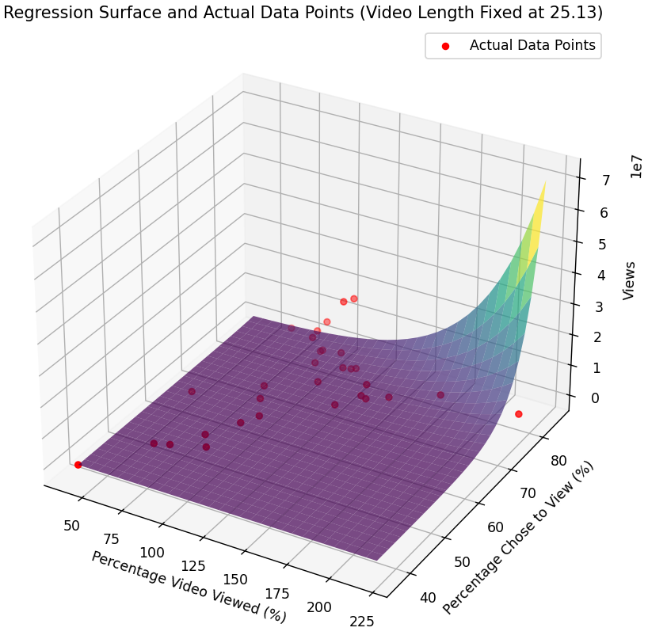

This is a view count approximator for YouTube shorts. Enter the information below to predict how many views your video will get. Note that this calculator is not an exact amount, and there are always outliers that do not fit the model. I will be updating this model with new information as time goes on to increase accuracy.
Please consider subscribing to my channel to help support more open-source software like this!
Predicted views after initial algorithm recommendation spike:
If you have data of your own, please feel free to send it to me via Discord (discord.gg/CGhv6VnZpD) in .csv format. Include the following four columns: Percentage_Video_Viewed, Percentage_Chose_to_View, Video_Length, Views
Here is the rough model produced from our regression-based predictor with current data:
